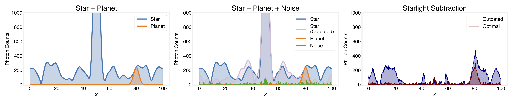
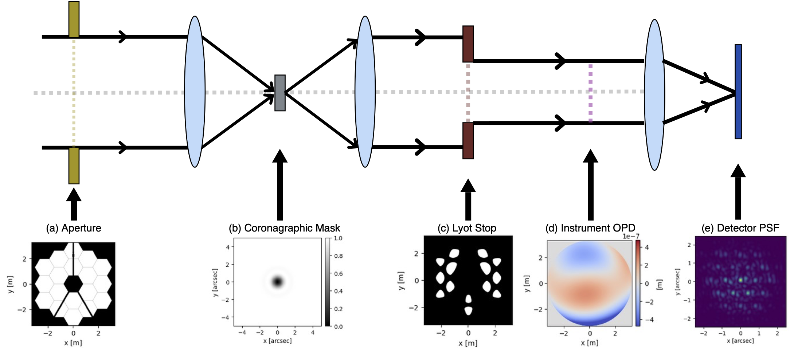
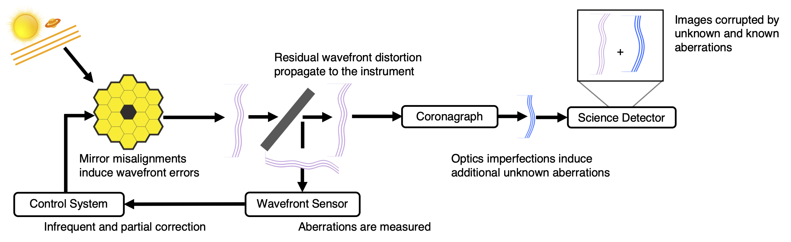
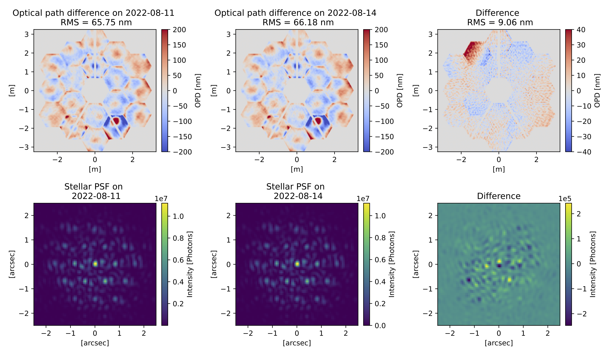
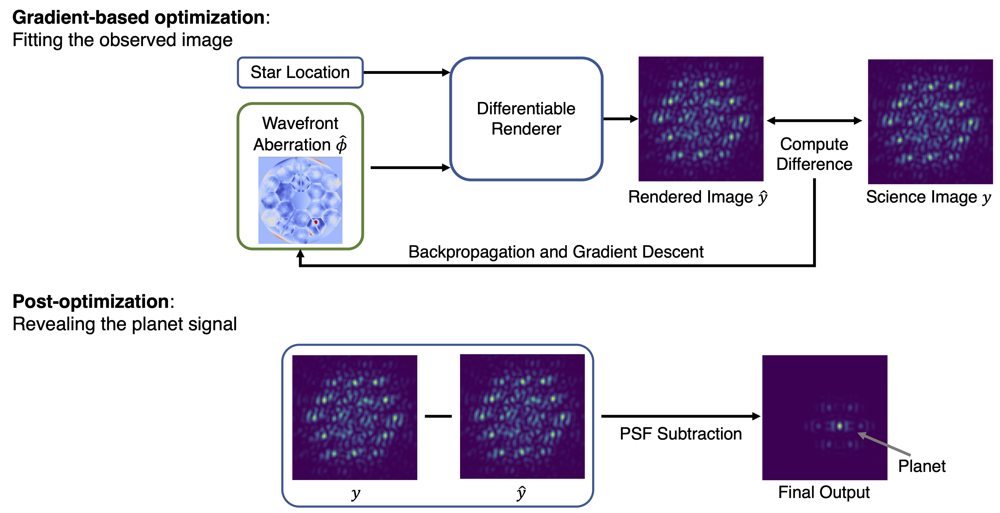
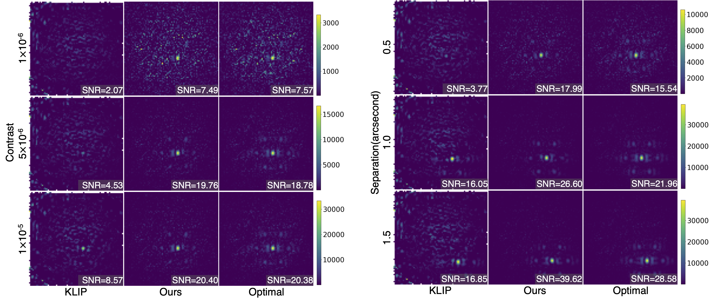

Abstract
Direct imaging of exoplanets is crucial for advancing our understanding of planetary systems beyond our solar system, but it faces significant challenges due to the high contrast between host stars and their planets. Wavefront aberrations introduce speckles in the telescope science images, which are patterns of diffracted starlight that can mimic the appearance of planets, complicating the detection of faint exoplanet signals. Traditional post-processing methods, operating primarily in the image intensity domain, do not integrate wavefront sensing data. These data, measured mainly for adaptive optics corrections, have been overlooked as a potential resource for post-processing, partly due to the challenge of the evolving nature of wavefront aberrations. In this paper, we present a differentiable rendering approach that leverages these wavefront sensing data to improve exoplanet detection. Our differentiable renderer models wave-based light propagation through a coronagraphic telescope system, allowing gradient-based optimization to significantly improve starlight subtraction and increase sensitivity to faint exoplanets. Simulation experiments based on the James Webb Space Telescope configuration demonstrate the effectiveness of our approach, achieving substantial improvements in contrast and planet detection limits. Our results showcase how the computational advancements enabled by differentiable rendering can revitalize previously underexploited wavefront data, opening new avenues for enhancing exoplanet imaging and characterization.
Toy Example of the Imaging Problem
a. Photon counts resulting from a star and a planet, including the effects of wavefront aberration. b. Incorrect star PSF used in practice (measured under a different wavefront aberration), and the level of photon noise in observations. c. Outdated: subtraction using the outdated star PSF, which leaves significant residuals that can be mistaken for the planet signal, posing the risk of false positive detection or too low signal-to-noise; Optimal: perfect starlight subtraction, representing the upper bound of performance, limited only by noise. The core imaging problem is separating the planet signals from the star signals. Our goal is to improve on the outdated starlight subtraction result via differentiable optimization, achieving a more accurate separation of the star and planet signals. This will effectively result in accurately reducing starlight residuals and improving planet detection sensitivity
Schematic Diagram of the Optical System
Schematic diagram of the Lyot Coronagraph equivalent to the one in JWST NIRCam, showing the role and impact of each optical element. This optical system forms the basis of our differentiable rendering approach and illustrates the complexity of the imaging process we aim to model. Light enters from the left, reflecting off the primary mirror (aperture) in the pupil plane, then focuses to the image plane where a coronagraphic mask blocks the central region containing the star. In the subsequent pupil plane, a Lyot stop suppresses residual diffracted starlight before the light undergoes instrument-induced wavefront aberrations and is refocused onto the image plane detector. The plots show: (a) aperture amplitude transmission, (b) coronagraphic mask amplitude transmission, (c) Lyot stop amplitude transmission, (d) static optical aberrations in the NIRCam instrument, and (e) resulting point spread function (PSF) at the detector, displaying measured intensity at each pixel.
Sources of Wavefront Aberrations
Illustration of the sources of wavefront aberrations. In space-based instruments like the James Webb Space Telescope (JWST), aberrations stem from mirror misalignments, tilt errors, or small deformations in the mirrors (purple curves) with measurements taken typically every two days (not simultaneous with the science observations) and slowly-evolving NCPAs (blue curves) that are also not measured directly. Wavefronts are partially corrected by deformable mirrors, but residual distortions persist in the final image due to optical imperfections.
Impact of Wavefront Aberrations
Visualization of wavefront aberration evolution with real JWST data. We show consecutive optical path difference measurements (taken around three days apart) and their resulting star PSFs, and the difference between both. The figure displays consecutive optical path difference (OPD) measurements taken approximately three days apart (a)-(b), their resulting star point spread functions (PSFs) (d)-(e), and the differences between both measurements (c),(f). The OPD color scale is limited to (-200, 200) nm to highlight the overall structure, although a significant meteoroid impact on the lower right mirror segment caused local OPD values to reach 800 nm. This visualization demonstrates the temporal evolution of wavefront aberrations and their impact on the star PSF.
Our Approach
Overview of the proposed differentiable rendering framework for enhanced exoplanet imaging. The method employs gradient-based optimization to improve the initial, outdated wavefront aberration estimate $\hat{\phi}$ based on the discrepancy between the rendered image $\hat{y}$ and the observed science image $y$. The differentiable renderer facilitates efficient backpropagation and gradient descent updates. It is important to note that while $y$ contains signals from both the star and the planet (along with noise and background), $\hat{y}$ only considers the star PSF. Since the optimization changes the structure of the estimated wavefront aberration, which primarily affect the star PSF, it is unlikely to overfit localized features like a planet as it would introduce larger inconsistencies with the dominant star signals. Upon convergence, the refined star PSF estimate is used for PSF subtraction, producing a final image where the planet signals are significantly enhanced and speckle noise is effectively suppressed.
Simulation Results

Effectiveness in improving starlight subtraction, at various star-planet contrast and wavefront drift levels. The angular separation between the planet and star is fixed at 0.6 arcseconds. The overall field of view diameter is 5 arcseconds (80 pixels). Each row shows different contrast levels between the star and the planet ($8\times10^{-7}$ to $4\times10^{-6}$), while each column represents increasing levels of drift (higher drift indicates a larger discrepancy between the previous wavefront sensor measurement and the actual wavefront aberration). The Initial images depict the results of subtracting an inaccurate star PSF derived from the outdated wavefront measurement, while the Final images show the improved starlight subtraction achieved through the optimization process. The Optimal images illustrate the ideal outcome of subtracting the ground truth star PSF, with imperfections due to measurement noise. Note that our method sometimes achieves a higher SNR than the Optimal result due to over-subtraction of noise, incorrectly attributing some noise to the star PSF. While this results in numerically higher SNR, it does not necessarily indicate a more accurate starlight subtraction and planet recovery. The differentiable framework consistently improves the contrast and detectability of the planet signal across a wide range of scenarios.

Robustness to variations in the planet's location. Separations are measured from the center of the image, which in these experiments is equivalent to the star's position. The overall field of view diameter is 5 arcseconds (80 pixels). For a fixed contrast level ($10^{-6}$) and wavefront aberration drift (40 hours), the planet is placed at different locations. The Initial images show the results of subtracting an inaccurate star PSF derived from the outdated wavefront measurement. The Final images display the improved starlight subtraction achieved through our optimization process. The Optimal images illustrate the ideal outcome of subtracting the ground truth star PSF, with imperfections due to measurement noise. Note that our method sometimes achieves a higher SNR than the Optimal result due to over-subtraction of noise, incorrectly attributing some noise to the star PSF. While this results in numerically higher SNR, it does not necessarily indicate a more accurate starlight subtraction and planet recovery. The results show that our method consistently achieves effective starlight subtraction and preserves the planet signal across all tested locations, highlighting its robustness to uncertainties in the planet's position.
Advancing the State of the Art
Comparison of our method against KLIP. Left: Performance across various star-planet contrast levels ($1\times10^{-6}$ to $1\times10^{-5}$) at a fixed separation of 0.6 arcseconds and 40 hours of wavefront aberration drift. Right: Performance across different angular separations (0.5 to 1.5 arcseconds) at a contrast of $5\times10^{-6}$ and 40 hours of drift. The Optimal column shows the subtraction using the ground truth star PSF. Our method consistently outperforms KLIP, particularly at higher contrast ratios and smaller separations, showing improved planet signal recovery in challenging scenarios. Note that our method sometimes achieves a higher SNR than the Optimal result due to over-subtraction of noise, incorrectly attributing some noise to the star PSF. While this results in a higher SNR, it does not necessarily indicate a more accurate starlight subtraction and planet recovery.
Contrast boundary for $5\sigma$ detection as a function of angular separation from the star. For a point on a curve, any planet with a contrast (y-axis) below it would have an SNR less than 5 and thus be considered undetectable at that separation. The blue curve represents the fundamental noise limit, determined by shot noise and read noise, which sets the theoretical boundary for planet detection. These are the noise limits for the experimental setup assumed in this paper (i.e., the star brightness and spectral type, total observation time, the filter used). This noise limit curve is inferred based on the overall noise amount, giving the minimum signal strength required to exceed the noise by a factor of 5. The orange curve shows the empirical contrast levels achieved by our method, obtained through iterative optimization at each separation in simulation until the SNR drops below 5. Our approach closely approaches the fundamental noise limit across a range of angular separations, demonstrating its effectiveness in maximizing planet detection capabilities within theoretical constraints. The proximity of the two curves illustrates how our framework nearly achieves the optimal performance allowed by the noise limits. The green curve shows the performance of KLIP. The rise in the contrast limit in the KLIP curve at $\sim$ 2 arcseconds is due to artifacts in the image subtraction from using reference images near the size of the stellar PSF and with a relative shift from one another (see Supplement).